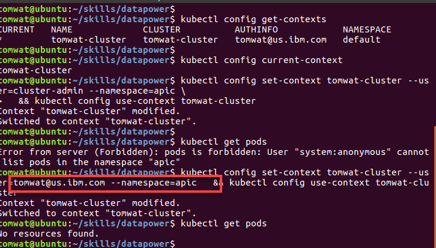

https://kubernetes.io/docs/reference/kubectl/cheatsheet/
Tired of entering the -n tag for every command? Set your defaults with the following:
$ kubectl config view
$ kubectl config get-contexts
CURRENT NAME CLUSTER AUTHINFO NAMESPACE
* tomwat-cluster tomwat-cluster tomwat@us.ibm.com default
$ kubectl config set-context tomwat-cluster --user=cluster-admin --namespace=apic \
&& kubectl config use-context tomwat-cluster
